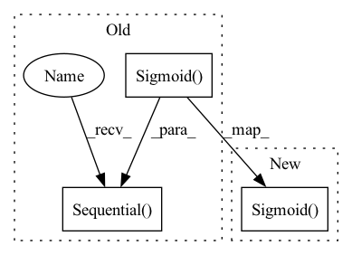

Pattern ID :584

Before Change
// self.linear2 = nn.Linear(label_width_d, ndf*8*4*4, bias=bias)
// self.sigmoid = nn.Sigmoid()
self.linear = nn.Sequential(
nn.Linear(ndf*8*4*4, 1, bias=bias),
nn.Sigmoid()
)
def forward(self, x, y):
y = y.view(-1,1)
After Change
self.linear1 = nn.Linear(ndf*8*4*4, 1, bias=bias)
self.linear2 = nn.Linear(label_width_d, ndf*8, bias=bias)
//// self.linear2 = nn.Linear(label_width_d, ndf*8*4*4, bias=bias)
self.sigmoid = nn.Sigmoid()
// self.linear = nn.Sequential(
// nn.Linear(ndf*8*4*4, 1, bias=bias),
// nn.Sigmoid()
In pattern: SUPERPATTERN
Frequency: 3
Non-data size: 3
Instances
Fragment ID: 2012092
Project Name: ubcdingxin/improved_ccgan
Commit Name: 2a8bae896ece80f4718e97fcad12c0794f5866bd
Time: 2020-04-13
Author: dingx92@gmail.com
File Name: SteeringAngle/models/cont_cond_cnn_generator_discriminator.py
M Class Name: cont_cond_cnn_discriminator
N Class Name: cont_cond_cnn_discriminator
M Method Name: __init__(5)
N Method Name: __init__(5)
M Parent Class: nn.Module
N Parent Class: nn.Module
M File Name: SteeringAngle/models/cont_cond_cnn_generator_discriminator.py
N File Name: SteeringAngle/models/cont_cond_cnn_generator_discriminator.py
M Start Line: 135
M End Line: 189
N Start Line: 153
N End Line: 226
'>
Before Change
// self.linear2 = nn.Linear(label_width_d, ndf*8*4*4, bias=bias)
// self.sigmoid = nn.Sigmoid()
self.linear = nn.Sequential(
nn.Linear(ndf*8*4*4, 1, bias=bias),
nn.Sigmoid()
)
def forward(self, x, y):
y = y.view(-1,1)
After Change
self.linear1 = nn.Linear(ndf*8*4*4, 1, bias=bias)
self.linear2 = nn.Linear(label_width_d, ndf*8, bias=bias)
//// self.linear2 = nn.Linear(label_width_d, ndf*8*4*4, bias=bias)
self.sigmoid = nn.Sigmoid()
// self.linear = nn.Sequential(
// nn.Linear(ndf*8*4*4, 1, bias=bias),
// nn.Sigmoid()
'>
Fragment ID: 2012090
Project Name: ubcdingxin/improved_ccgan
Commit Name: 2a8bae896ece80f4718e97fcad12c0794f5866bd
Time: 2020-04-13
Author: dingx92@gmail.com
File Name: UTKFace/models/cont_cond_cnn_generator_discriminator.py
M Class Name: cont_cond_cnn_discriminator
N Class Name: cont_cond_cnn_discriminator
M Method Name: __init__(5)
N Method Name: __init__(5)
M Parent Class: nn.Module
N Parent Class: nn.Module
M File Name: UTKFace/models/cont_cond_cnn_generator_discriminator.py
N File Name: UTKFace/models/cont_cond_cnn_generator_discriminator.py
M Start Line: 195
M End Line: 198
N Start Line: 189
N End Line: 192
'>
Before Change
class Discriminator(nn.Module):
def __init__(self, channels_img, features_d):
super(Discriminator, self).__init__()
self.disc = nn.Sequential(
// input: N x channels_img x 64 x 64
nn.Conv2d(
channels_img, features_d, kernel_size=4, stride=2, padding=1
),
nn.LeakyReLU(0.2),
// _block(in_channels, out_channels, kernel_size, stride, padding)
self._block(features_d, features_d * 2, 4, 2, 1),
self._block(features_d * 2, features_d * 4, 4, 2, 1),
self._block(features_d * 4, features_d * 8, 4, 2, 1),
// After all _block img output is 4x4 (Conv2d below makes into 1x1)
nn.Conv2d(features_d * 8, 1, kernel_size=4, stride=2, padding=0),
nn.Sigmoid(),
)
def _block(self, in_channels, out_channels, kernel_size, stride, padding):
return nn.Sequential(
nn.Conv2d(
After Change
("block3", self._block(features_d * 4, features_d * 8, 4, 2, 1)),
// After all _block img output is 4x4 (Conv2d below makes into 1x1)
("conv_out", nn.Conv2d(features_d * 8, 1, kernel_size=4, stride=2, padding=0)),
("sigmoid", nn.Sigmoid()),
]))
def _block(self, in_channels, out_channels, kernel_size, stride, padding):
'>
Fragment ID: 2012089
Project Name: ebartrum/lightning_gan_zoo
Commit Name: d0ec14e8cc60da7db50ea8e713b7b383c1d2a315
Time: 2021-01-15
Author: edward.bartrum@gmail.com
File Name: core/networks.py
M Class Name: Discriminator
N Class Name: Discriminator
M Method Name: __init__(3)
N Method Name: __init__(3)
M Parent Class: nn.Module
N Parent Class: nn.Module
M File Name: core/networks.py
N File Name: core/networks.py
M Start Line: 10
M End Line: 23
N Start Line: 11
N End Line: 24